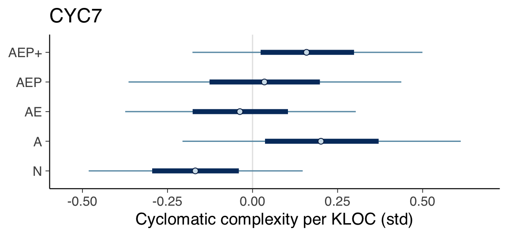
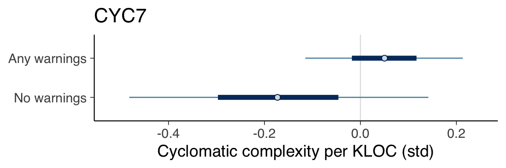
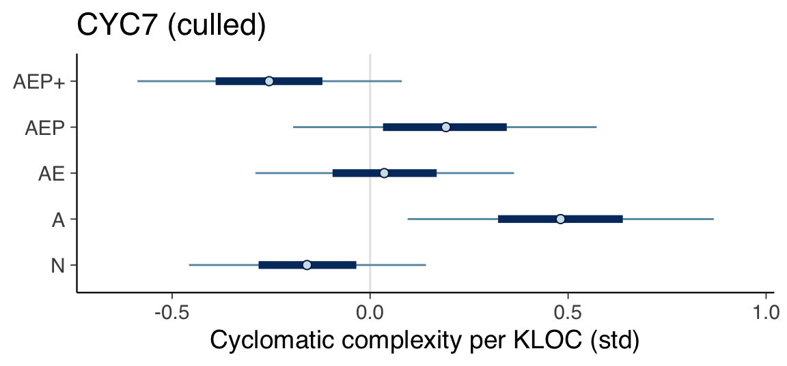
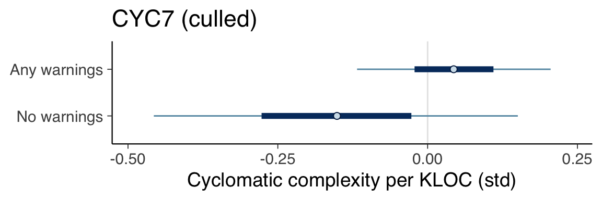

Chapter 13 Cyclomatic Complexity
This section covers the analysis relating to the cyclomatic complexity metric.
13.1 Prepare data
# The model seed is the date that the analysis was conducted
model_seed <- 20230331
create_cyclomatic_complexity_data <- function(data) {
list(
cyclomatic_complexity_kloc_std=scale(data$cyclomatic_complexity_kloc),
contributors_std=scale(data$contributors),
stars_std=scale(data$stars),
files_std=scale(data$files),
size_std=scale(data$loc),
age_std=scale(get_age(data$created_at))
)
}
# Prepare data with all categories as factors (1-11).
data <- create_cyclomatic_complexity_data(df)
data$category <- factor(df$category)
# Prepare data that factors on the presence of compiler warnings
data_factor_uses_warnings <- create_cyclomatic_complexity_data(df)
data_factor_uses_warnings$category <- factor(uses_warnings(df$category))13.2 Define models
13.2.1 CYC1
fit_model_cyc1 <- function(name, data) {
fit_model(name,
"cyclomatic_complexity_kloc_std ~ 0 + category",
c(
prior(normal(0, 1), class=b),
prior(exponential(1), class=sigma)
),
data,
model_seed)
}
cyc1 <- fit_model_cyc1("cyc1", data)13.2.2 CYC2
fit_model_cyc2 <- function(name, data) {
fit_model(name,
"cyclomatic_complexity_kloc_std ~ 0 + category + contributors_std",
c(
prior(normal(0, 1), class=b),
prior(normal(0, 1), class=b, coef="contributors_std"),
prior(exponential(1), class=sigma)
),
data,
model_seed)
}
cyc2 <- fit_model_cyc2("cyc2", data)13.2.3 CYC3
fit_model_cyc3 <- function(name, data) {
fit_model(name,
"cyclomatic_complexity_kloc_std ~ 0 + category + size_std",
c(
prior(normal(0, 1), class=b),
prior(normal(0, 1), class=b, coef="size_std"),
prior(exponential(1), class=sigma)
),
data,
model_seed)
}
cyc3 <- fit_model_cyc3("cyc3", data)13.2.4 CYC4
fit_model_cyc4 <- function(name, data) {
fit_model(name,
"cyclomatic_complexity_kloc_std ~ 0 + category + files_std",
c(
prior(normal(0, 1), class=b),
prior(normal(0, 1), class=b, coef="files_std"),
prior(exponential(1), class=sigma)
),
data,
model_seed)
}
cyc4 <- fit_model_cyc4("cyc4", data)13.2.5 CYC5
fit_model_cyc5 <- function(name, data) {
fit_model(name,
"cyclomatic_complexity_kloc_std ~ 0 + category + age_std",
c(
prior(normal(0, 1), class=b),
prior(normal(0, 1), class=b, coef="age_std"),
prior(exponential(1), class=sigma)
),
data,
model_seed)
}
cyc5 <- fit_model_cyc5("cyc5", data)13.2.6 CYC6
fit_model_cyc6 <- function(name, data) {
fit_model(name,
"cyclomatic_complexity_kloc_std ~ 0 + category + stars_std",
c(
prior(normal(0, 1), class=b),
prior(normal(0, 1), class=b, coef="stars_std"),
prior(exponential(1), class=sigma)
),
data,
model_seed)
}
cyc6 <- fit_model_cyc6("cyc6", data)13.2.7 CYC7
fit_model_cyc7 <- function(name, data) {
fit_model(name,
"cyclomatic_complexity_kloc_std ~ 0 + category + size_std + files_std",
c(
prior(normal(0, 1), class=b),
prior(normal(0, 1), class=b, coef="size_std"),
prior(normal(0, 1), class=b, coef="files_std"),
prior(exponential(1), class=sigma)
),
data,
model_seed)
}
cyc7 <- fit_model_cyc7("cyc7", data)13.2.8 CYC8
fit_model_cyc8 <- function(name, data) {
fit_model(name,
"cyclomatic_complexity_kloc_std ~ 0 + category + size_std + age_std",
c(
prior(normal(0, 1), class=b),
prior(normal(0, 1), class=b, coef="size_std"),
prior(normal(0, 1), class=b, coef="age_std"),
prior(exponential(1), class=sigma)
),
data,
model_seed)
}
cyc8 <- fit_model_cyc8("cyc8", data)13.3 Compare models
cyc1 <- add_criterion(cyc1, criterion="loo", moment_match=FALSE)
cyc2 <- add_criterion(cyc2, criterion="loo", moment_match=FALSE)
cyc3 <- add_criterion(cyc3, criterion="loo", moment_match=FALSE)
cyc4 <- add_criterion(cyc4, criterion="loo", moment_match=FALSE)
cyc5 <- add_criterion(cyc5, criterion="loo", moment_match=FALSE)
cyc6 <- add_criterion(cyc6, criterion="loo", moment_match=FALSE)
cyc7 <- add_criterion(cyc7, criterion="loo", moment_match=FALSE)
cyc8 <- add_criterion(cyc8, criterion="loo", moment_match=FALSE)
print(loo_compare(cyc1, cyc2, cyc3, cyc4, cyc5, cyc6, cyc7, cyc8, criterion="loo"),
simplify=FALSE)## elpd_diff se_diff elpd_loo se_elpd_loo p_loo se_p_loo looic se_looic
## cyc7 0.0 0.0 -198.7 54.9 28.1 24.0 397.5 109.8
## cyc4 -0.2 1.2 -199.0 56.1 28.6 24.8 398.0 112.2
## cyc3 -1.1 1.3 -199.8 56.1 29.7 25.8 399.6 112.2
## cyc8 -1.1 0.5 -199.9 55.2 29.5 25.4 399.8 110.4
## cyc5 -1.3 1.0 -200.0 54.3 27.8 24.0 400.1 108.7
## cyc6 -2.4 0.8 -201.2 55.2 29.6 25.6 402.3 110.3
## cyc2 -2.8 1.1 -201.5 55.7 29.8 25.8 403.0 111.3
## cyc1 -3.1 2.2 -201.9 57.0 30.5 26.8 403.7 114.013.4 Determine natural scale values
summary(cyc7)## Family: gaussian
## Links: mu = identity; sigma = identity
## Formula: cyclomatic_complexity_kloc_std ~ 0 + category + size_std + files_std
## Data: data (Number of observations: 127)
## Draws: 4 chains, each with iter = 10000; warmup = 5000; thin = 1;
## total post-warmup draws = 20000
##
## Population-Level Effects:
## Estimate Est.Error l-95% CI u-95% CI Rhat Bulk_ESS Tail_ESS
## category1 -0.17 0.19 -0.54 0.21 1.00 24639 15428
## category2 0.20 0.25 -0.28 0.69 1.00 27319 15493
## category3 -0.04 0.21 -0.44 0.37 1.00 23064 15118
## category4 0.16 0.45 -0.71 1.06 1.00 24944 15074
## category5 0.04 0.24 -0.45 0.52 1.00 24732 15635
## category6 -0.13 0.34 -0.81 0.55 1.00 23470 15194
## category7 0.16 0.20 -0.24 0.56 1.00 26228 15503
## category8 -0.32 0.70 -1.70 1.07 1.00 24102 15462
## category9 -0.23 0.71 -1.63 1.17 1.00 26667 15916
## category10 -0.05 0.50 -1.05 0.93 1.00 25664 15574
## category11 -0.33 0.71 -1.73 1.05 1.00 26261 15958
## size_std -0.03 0.17 -0.36 0.30 1.00 15781 14130
## files_std -0.16 0.17 -0.49 0.17 1.00 15694 14015
##
## Family Specific Parameters:
## Estimate Est.Error l-95% CI u-95% CI Rhat Bulk_ESS Tail_ESS
## sigma 1.01 0.07 0.89 1.16 1.00 20506 14284
##
## Draws were sampled using sampling(NUTS). For each parameter, Bulk_ESS
## and Tail_ESS are effective sample size measures, and Rhat is the potential
## scale reduction factor on split chains (at convergence, Rhat = 1).print(create_natural_scale_summary_df(cyc7, df$cyclomatic_complexity_kloc))## Mean SD 0.05 CI 0.95 CI
## N 137.50 177.31 103.21 172.89
## A 178.42 183.95 133.07 223.77
## AE 151.87 179.53 115.38 189.48
## AEP 160.72 182.84 116.48 204.96
## AEP+ 174.00 178.42 136.39 211.6013.5 Intervals of major categories
plot_intervals_of_major_categories(cyc7) +
labs(title="CYC7", x="Cyclomatic complexity per KLOC (std)")
13.6 Warnings versus no warnings
cyc7_factor_uses_warnings <- fit_model_cyc7("cyc7_factor_uses_warnings",
data_factor_uses_warnings)
plot_intervals_of_categories(cyc7_factor_uses_warnings) +
labs(title="CYC7", x="Cyclomatic complexity per KLOC (std)") +
scale_y_discrete(labels=c(
"b_category1"="No warnings",
"b_category2"="Any warnings"
))
13.7 Without outliers
Category AEP+ has a notable outlier, “better-enums”. We will remove it from the sample population to see how this affects the analysis results.
df_culled <- df
df_culled <- df_culled[df_culled$name != "better-enums",]
culled_data <- create_cyclomatic_complexity_data(df_culled)
culled_data$category <- factor(df_culled$category)
cyc7_culled <- fit_model_cyc7("cyc7_no_outliers", culled_data)
summary(cyc7_culled)## Family: gaussian
## Links: mu = identity; sigma = identity
## Formula: cyclomatic_complexity_kloc_std ~ 0 + category + size_std + files_std
## Data: data (Number of observations: 126)
## Draws: 4 chains, each with iter = 10000; warmup = 5000; thin = 1;
## total post-warmup draws = 20000
##
## Population-Level Effects:
## Estimate Est.Error l-95% CI u-95% CI Rhat Bulk_ESS Tail_ESS
## category1 -0.16 0.18 -0.52 0.20 1.00 28541 15270
## category2 0.48 0.24 0.01 0.95 1.00 27517 15610
## category3 0.04 0.20 -0.35 0.42 1.00 27561 15404
## category4 0.43 0.44 -0.44 1.29 1.00 27417 15041
## category5 0.19 0.23 -0.27 0.64 1.00 27157 15107
## category6 -0.12 0.33 -0.76 0.53 1.00 25993 15579
## category7 -0.25 0.20 -0.65 0.15 1.00 26249 13947
## category8 -0.53 0.69 -1.89 0.81 1.00 26834 15748
## category9 -0.35 0.70 -1.72 1.01 1.00 27147 14892
## category10 0.01 0.49 -0.95 0.98 1.00 27074 15230
## category11 -0.54 0.69 -1.90 0.83 1.00 27614 15836
## size_std -0.04 0.16 -0.35 0.28 1.00 14973 14417
## files_std -0.26 0.16 -0.57 0.06 1.00 16403 15154
##
## Family Specific Parameters:
## Estimate Est.Error l-95% CI u-95% CI Rhat Bulk_ESS Tail_ESS
## sigma 0.97 0.06 0.85 1.11 1.00 22460 14588
##
## Draws were sampled using sampling(NUTS). For each parameter, Bulk_ESS
## and Tail_ESS are effective sample size measures, and Rhat is the potential
## scale reduction factor on split chains (at convergence, Rhat = 1).print(create_natural_scale_summary_df(cyc7_culled, df_culled$cyclomatic_complexity_kloc))## Mean SD 0.05 CI 0.95 CI
## N 138.31 159.13 119.94 156.68
## A 177.50 162.81 153.62 201.38
## AE 150.56 160.36 130.35 170.15
## AEP 159.75 162.19 136.48 183.01
## AEP+ 132.80 160.36 111.98 153.01We can now plot the credible intervals of the major categories again, and see that AEP+ has dramatically improved as a result of removing the outlier. The plot indicates that there is no clear correlation between use of compiler warnings and cyclomatic complexity.
plot_intervals_of_major_categories(cyc7_culled) +
labs(title="CYC7 (culled)", x="Cyclomatic complexity per KLOC (std)")
However, projects that do not use warnings still have lower cyclomatic complexity than those who do use warnings.
data_cyc_factor_uses_warnings <- create_cyclomatic_complexity_data(df_cyc)
data_cyc_factor_uses_warnings$category <- factor(uses_warnings(df_cyc$category))
cyc7_culled_factor_uses_warnings <-
fit_model_cyc7("cyc7_no_outliers_factor_uses_warnings",
data_cyc_factor_uses_warnings)
plot_intervals_of_categories(cyc7_culled_factor_uses_warnings) +
labs(title="CYC7 (culled)", x="Cyclomatic complexity per KLOC (std)") +
scale_y_discrete(labels=c(
"b_category1"="No warnings",
"b_category2"="Any warnings"
))